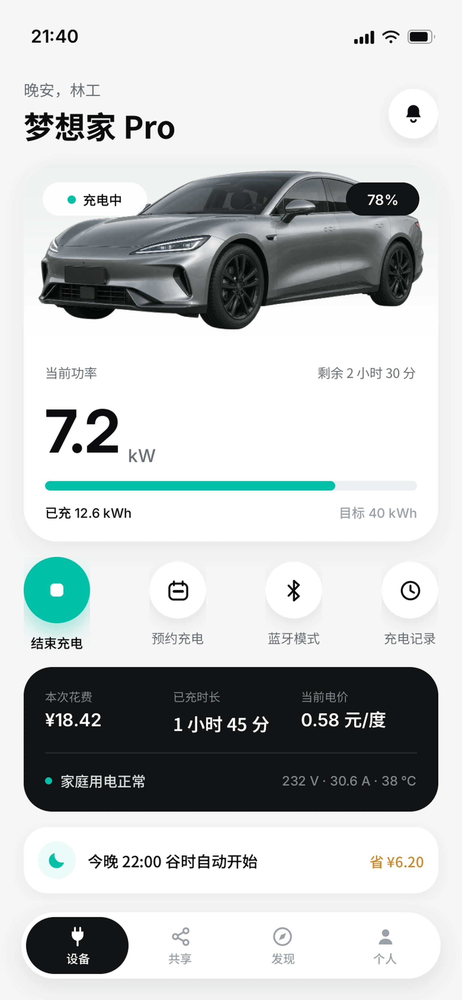
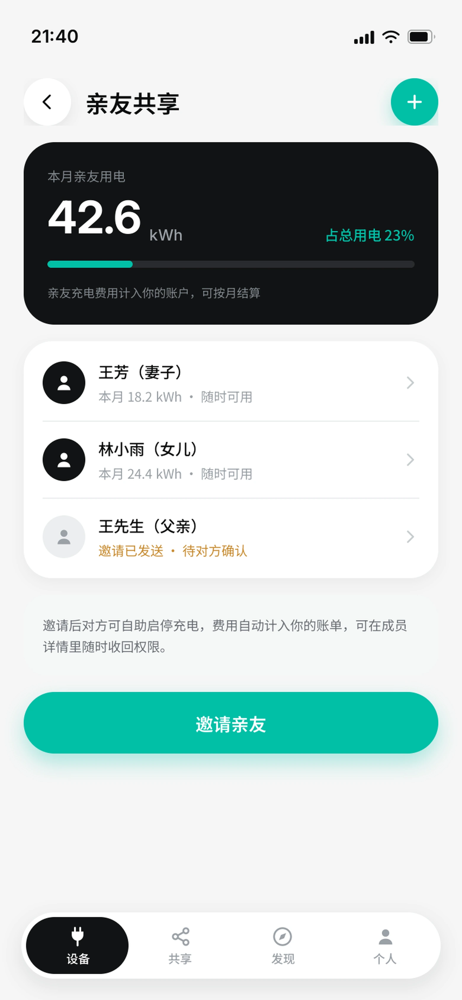
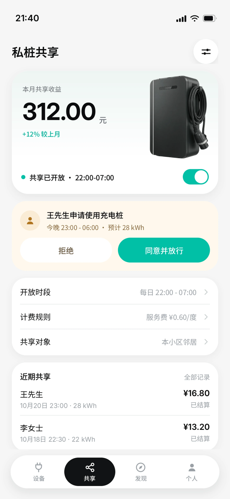
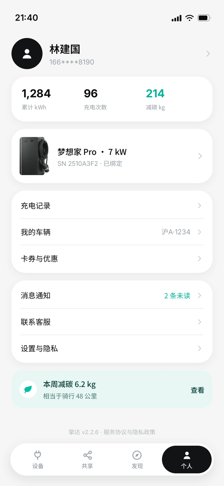
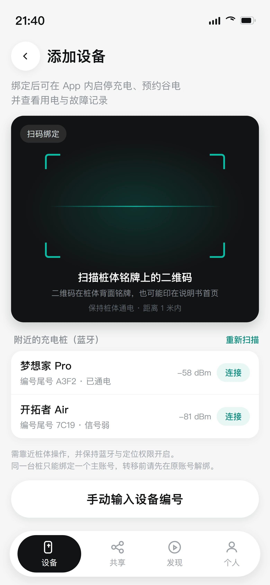
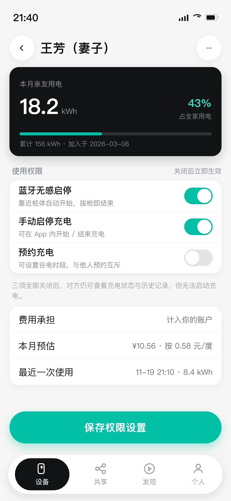

← 返回全部作品
C端产品
挚达 App 再设计
先弄清它是什么，再改
挚达是真实的私桩充电 App。改版前我先把公开渠道能找到的 21 条来源、142 份文件对齐，发现三处对不上，再补了缺的屏，做了 15 屏。概念改版，不代表官方立场。
先弄清它现在长什么样，再谈改版
同一个 App，官方商城的渲染图、应用商店截图、用户晒图，是三种不同的样子。
挚达是真实的私桩充电产品。我做的是概念改版，不代表官方，也没有参与他们的设计。
21 条来源、142 份文件，先对齐再判断
公开渠道能拿到的材料先对齐，再决定哪里要改。
21来源条目，附 URL 与抓取日期
142归档文件：界面、手册、政策、代码清单
93iOS 真实评价，1 星 79 条
16 / 20页面清单中有界面证据的项数
- 招股书 PDF 642 页，印刷页码比 PDF 顺序页小 9：说「第 234 页」，实际翻到第 243 页。
- 2.2.0 安装包解出 85 个 Activity、57 条界面字符串，两套 Activity 命名并存，说明界面被整体重建过。
- 93 条 iOS 评价里 1 星 79 条；2026-08 之后能算当前版本证据的只有 10 条，其中 6 条在讲频繁重新登录。
- 20 项页面清单里 16 项有界面证据，多数只到入口；绑定桩之后的详情、充电中、预约表单还得靠推断。

三处对不上，决定改哪里
把料对齐之后，有三处地方，官方说的和真机上的是两件事。
- 底部 Tab：招股书是设备／统计／发现／个人，真机是设备／共享／发现／个人——统计被降到了个人页里。我按真机做。
- 「共享」两个字：iOS 的共享是授权亲友用，Android 的共享 Tab 是邻里运营（平台服务费 0.1 元/度）。同一个词，两种生意。我拆成两条线。
- 防盗充电：官方文案里有，安装包字符串 0 命中，真机也没页面。只保留有依据的蓝牙无感，防盗标「未见界面证据」。
两个决定：只显示拿得到的数据；权限能拆
数据只说自己有的，权限要能一格一格关。
- 电价统一成一个口径：首页、预估、结算都用 0.58 元/度，不再出现按 8 小时 × 7.2 kW 反推的 0.215。
- 尖峰平谷四项加起来要是 100%：官方图里的 109% 不抄，改成 12 / 26 / 28 / 34。
- 亲友权限拆成三项：蓝牙无感启停、手动启停、预约。三项全关，对方还能看状态，但启动不了。
- 合规放在明面上：隐私政策生效日、6 项系统权限、注销入口都在设置页，不折叠。
十屏主链：插枪到结算
一屏一个任务，不在一个页面里塞五件事。







原稿从「已绑定」开始，登录和合规位是空的
补的五屏都在这儿：
- 添加设备：扫码做主视觉，蓝牙列表做次入口，文案沿用安装包里「同一台桩只能绑定一个主账号」。
- 设备详情：一屏说清能改什么——蓝牙无感、电流上限、屏显、固件和解绑。
- 用电安全：数值以桩端计量为准，30 mA / ≤0.1 s 来自产品手册，措辞用「剩余电流保护（RCD）」。
- 成员权限：「随时可用」拆成三项开关，并写明全关之后还能做什么。
- 设置与隐私：6 项系统权限、隐私政策生效日、注销入口、开屏广告开关，按政策原文对齐。





我自己画错的地方也列出来
六处画错，逐个改回来了。
- 服务费写成 ¥0.60/度；真机运营页是 0.1，已改。
- 用了电池 SOC 78%、充至 80%；挚达只有桩端计量，没有车端 SOC，改成 kWh 或标来源。
- 预约花费反推出 0.215 元/度，和首页 0.58 打脸，改成目标电量 × 谷电价。
- 发现页画成套餐、商城、社区；真机是说明书、常见问题、安装相关、App 使用。
- 个人中心删掉了共享收益、绿色能量、商品订单；真机有，应该保留重排。
- 亲友权限只写「随时可用」；官方是三项，得拆开。
界面做完了，验证没做
15 屏和冲突清单都在，但没有充电桩，也没有真实车主。
- 做完的：21 条来源、142 份归档、20 项页面清单、15 屏界面、6 处冲突核对。
- 没做的：真机全流程、车主访谈、可用性测试；没有桩，所以不产出任何「充电中」的真实截图。
- 待验证：车主怎么理解「共享」，kWh 能不能替代 SOC 的心智。
- 还缺 6 屏：登录、首次设置、即插即充、防盗充电、蓝牙离线、安装进度。
 智审 · AI 指出来，人来核
智审 · AI 指出来，人来核